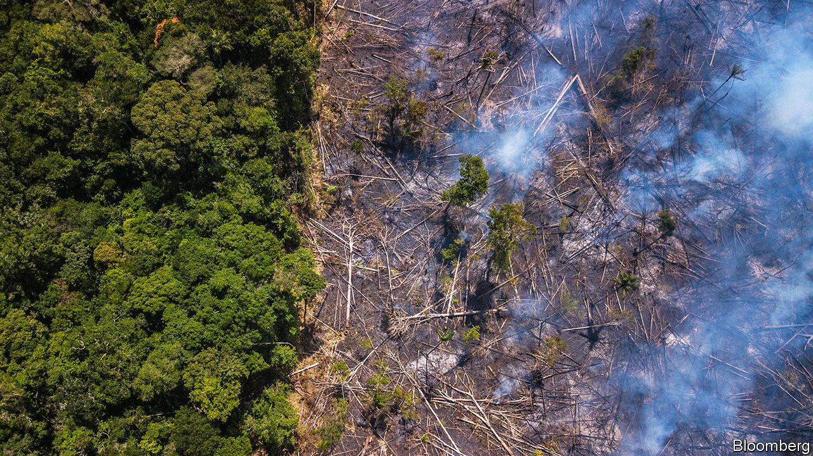
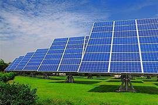
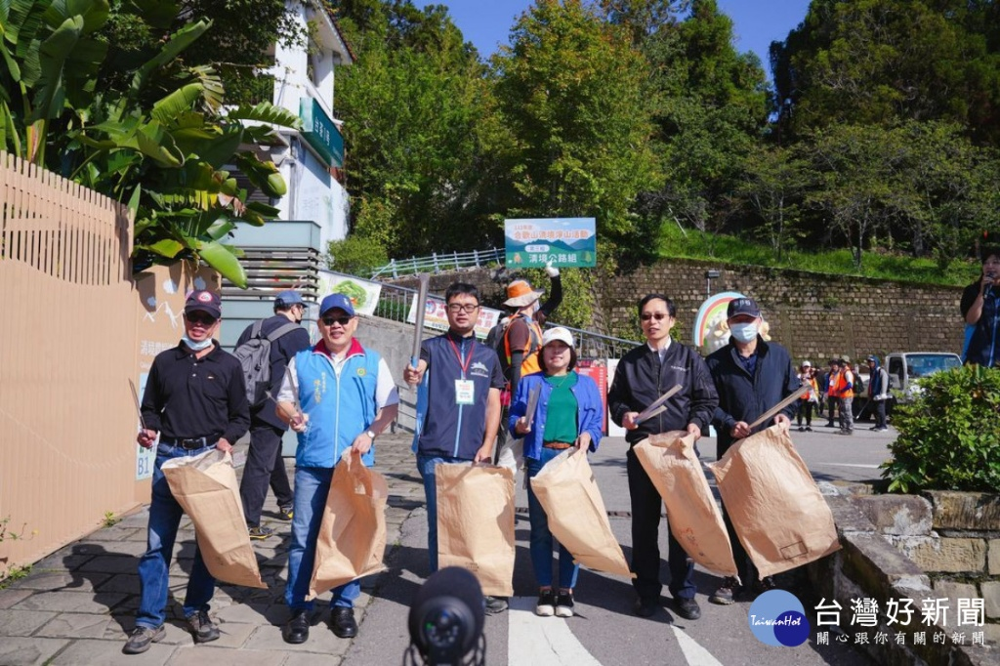

03. 生物多樣性喪失
每天都有大量森林被砍伐，無數動植物失去棲息的家園。
生物多樣性的流失正在破壞自然的平衡，使生態系統逐漸崩解。
當一個物種消失，影響的不只是自然，更是人類未來的生存環境。


04. 工業排放
工業發展帶來經濟成長，同時也排放大量二氧化碳與有害氣體。
這些排放不斷累積，使溫室效應加劇，全球氣溫持續上升。
長期下來，不僅環境惡化，人類的健康與生活品質也將受到嚴重威脅。


05. 再生能源
發展太陽能與風力等再生能源，是減少污染的關鍵方向。
相較於化石燃料，乾淨能源能大幅降低碳排放與環境破壞。
能源的轉型，不只是科技進步，更是人類對未來的責任。


07. 綠化地球
植樹造林能吸收二氧化碳，並釋放氧氣，改善空氣品質。
森林同時也是防止土壤流失與自然災害的重要屏障。
一棵樹的力量或許有限，但整片森林能改變地球的未來。


08. 保護水資源
水是生命的基礎，但可用的淡水資源卻非常有限。
污染與浪費使水資源問題日益嚴重。
節約用水與保護水源，是確保未來生存的重要關鍵。


09. 從你我開始
改變世界，往往從最簡單的行動開始。
少用塑膠、多節約能源、選擇環保產品，都是重要的一步。
當每個人都願意付出一點點，地球就會變得不一樣。


綠色 - 清潔 - 美麗

黃重福
黃文茶

阮文平
感恩大家的聆聽